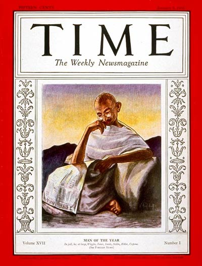

Gandhi is an inspiration to so many people in the world, and I am no exception. He has changed our society in ways that we don't even realize. If it wasn't for him, many things that we take for granted wouldn't exist. To say that Gandhi affected the world is an understatement. He helped India become its own country and become independent from British control.
Over his lifetime, he has said many amazing quotes about life, forgiveness, peace, and other topics that relate to people of all backgrounds. He pushed for npn-violence and understanding of others. "You must not lose faith in humanity. Humanity is an ocean; if a few drops of the ocean are dirty, the ocean does not become dirty." This quote reminds me to not let everything get to my head, for the world is gigantic and these problems are very small.

The cover of Time Magazine when he was made their Person of the Year in 1930